Loading packages
pacman::p_load(rgdal, spdep, tmap, sf,
ggpubr, cluster, factoextra, NbClust,
heatmaply, corrplot, psych, tidyverse, purrr)In previous sections we have seen how to
handle geospatial and aspatial data
plot choropleth math
compute various types of spatial weights
derive spatial weight matrix
determine hotspot and coldspot areas
measure global and local measures of spatial autocorrelation
The objective of this study is to understand how to delineate homogeneous region by using geographically referenced multivariate data. There are two major analysis, namely:
hierarchical cluster analysis; and
spatially constrained cluster analysis.
What is geographical segmentation?
Geographic segmentation divides a target market by location so marketers can better serve customers in a particular area. This type of market segmentation is based on the geographic units themselves (countries, states, cities, etc.), but also on various geographic factors, such as climate, cultural preferences, populations, and more.
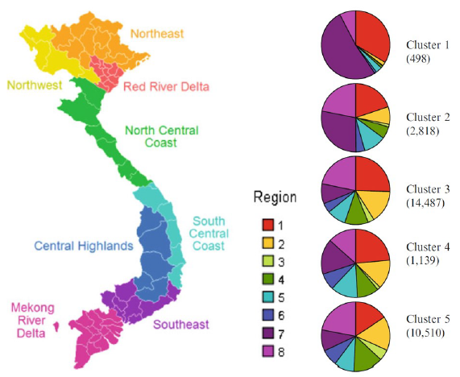
In this study, we are going to delineate Shan State, Myanmar into homogeneous regions by using multiple Information and Communication technology (ICT) measures, namely: Radio, Television, Land line phone, Mobile phone, Computer, and Internet at home.
Some of the important steps performed in this study are as follows
performing custer analysis by using hclust() of Base R;
performing spatially constrained cluster analysis using skater() of Base
visualising the analysis output by using ggplot2 and tmap package.
Following two data sets are used:
Myanmar Township Boundary Data (i.e. myanmar_township_boundaries) : This is a GIS data in ESRI shapefile format. It consists of township boundary information of Myanmar. The spatial data are captured in polygon features.
Shan-ICT.csv: This is an extract of The 2014 Myanmar Population and Housing Census Myanmar at the township level.
p_load function pf pacman package is used to install and load sf all necessary packages into R environment.
sf, rgdal and spdep - Spatial data handling
tidyverse, especially readr, ggplot2 and dplyr - Attribute data handling
tmap -Choropleth mapping
coorplot, ggpubr, and heatmaply - Multivariate data visualisation and analysis
cluster, ClustGeo - Cluster analysis
The code chunk below installs and launches these R packages into R environment.
pacman::p_load(rgdal, spdep, tmap, sf,
ggpubr, cluster, factoextra, NbClust,
heatmaply, corrplot, psych, tidyverse, purrr)The Myanmar Township Boundary GIS data is in ESRI shapefile format. It is imported into R environment by using the st_read() function of sf. The imported InfoComm variables are extracted from The 2014 Myanmar Population and Housing Census Myanmar. The attribute data set is called ict. It is saved in R’s tibble data.frame format.
shan_sf <- st_read(dsn = "data/geospatial",
layer = "myanmar_township_boundaries") %>%
filter(ST %in% c("Shan (East)", "Shan (North)", "Shan (South)"))Reading layer `myanmar_township_boundaries' from data source
`D:\raveenaclr\Geospatial Analytics\Hands-on_Ex\data\geospatial'
using driver `ESRI Shapefile'
Simple feature collection with 330 features and 14 fields
Geometry type: MULTIPOLYGON
Dimension: XY
Bounding box: xmin: 92.17275 ymin: 9.671252 xmax: 101.1699 ymax: 28.54554
Geodetic CRS: WGS 84ict <- read_csv ("data/aspatial/Shan-ICT.csv")It is wiser to take proportion of no. of households present instead of using the numbers directly. So, let us preprocess the data accordingly by using the code chunk below:
ict_derived <- ict %>%
mutate(`RADIO_PR` = `Radio`/`Total households`*1000) %>%
mutate(`TV_PR` = `Television`/`Total households`*1000) %>%
mutate(`LLPHONE_PR` = `Land line phone`/`Total households`*1000) %>%
mutate(`MPHONE_PR` = `Mobile phone`/`Total households`*1000) %>%
mutate(`COMPUTER_PR` = `Computer`/`Total households`*1000) %>%
mutate(`INTERNET_PR` = `Internet at home`/`Total households`*1000) %>%
rename(`DT_PCODE` =`District Pcode`,`DT`=`District Name`,
`TS_PCODE`=`Township Pcode`, `TS`=`Township Name`,
`TT_HOUSEHOLDS`=`Total households`,
`RADIO`=`Radio`, `TV`=`Television`,
`LLPHONE`=`Land line phone`, `MPHONE`=`Mobile phone`,
`COMPUTER`=`Computer`, `INTERNET`=`Internet at home`) Let’s verify if the new columns are added bu using colnames()
colnames(ict_derived) [1] "DT_PCODE" "DT" "TS_PCODE" "TS"
[5] "TT_HOUSEHOLDS" "RADIO" "TV" "LLPHONE"
[9] "MPHONE" "COMPUTER" "INTERNET" "RADIO_PR"
[13] "TV_PR" "LLPHONE_PR" "MPHONE_PR" "COMPUTER_PR"
[17] "INTERNET_PR" We can see that six new fields namely RADIO_PR, TV_PR, LLPHONE_PR, MPHONE_PR, COMPUTER_PR, and INTERNET_PR have been added into the data.frame.
How many are using radio?
Let us visualize using histogram
ggplot(data=ict_derived,
aes(x=`RADIO`,
y= ..density..)) +
geom_histogram(bins=20,
color="black",
fill="light blue")+
geom_density(color="red",
alpha=0.2)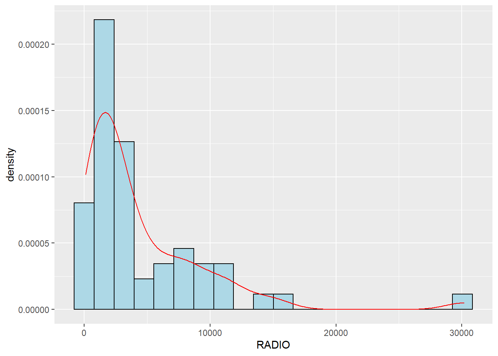
Let us detect now if there are any outliers. Also the plot shows the distribution is not normal. And so let us plot the derived one.
ggplot(data=ict_derived,
aes(x=`RADIO`)) +
geom_boxplot(color="black",
fill="light blue")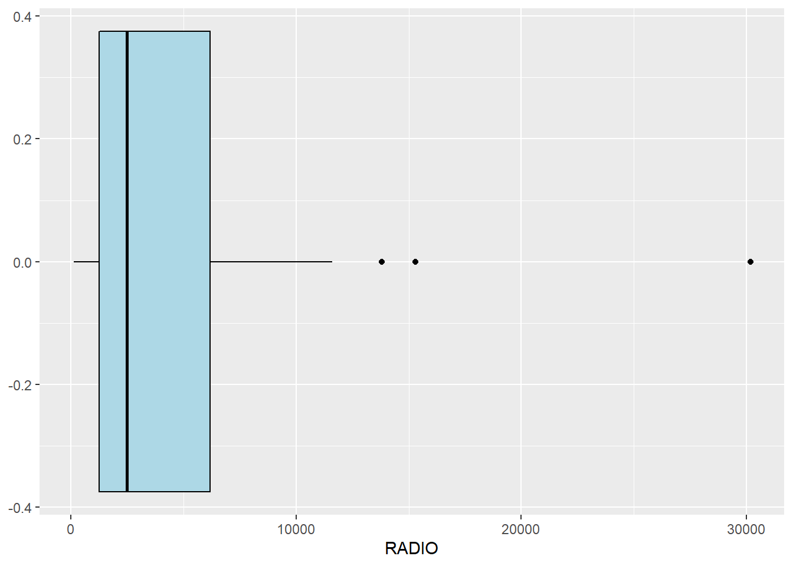
Let us plot the distribution of the newly derived variables (i.e. Radio penetration rate) by using the code chunk below.
ggplot(data=ict_derived,
aes(x=`RADIO_PR`,
y= ..density..)) +
geom_histogram(bins=20,
color="black",
fill="light blue")+
geom_density(color="red",
alpha = 0.2)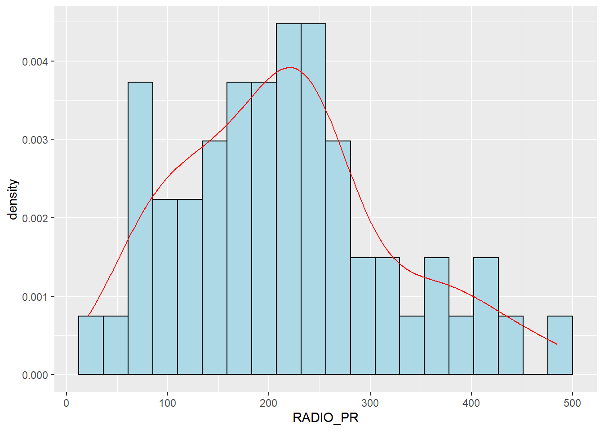
ggplot(data=ict_derived,
aes(x=`RADIO_PR`)) +
geom_boxplot(color="black",
fill="light blue")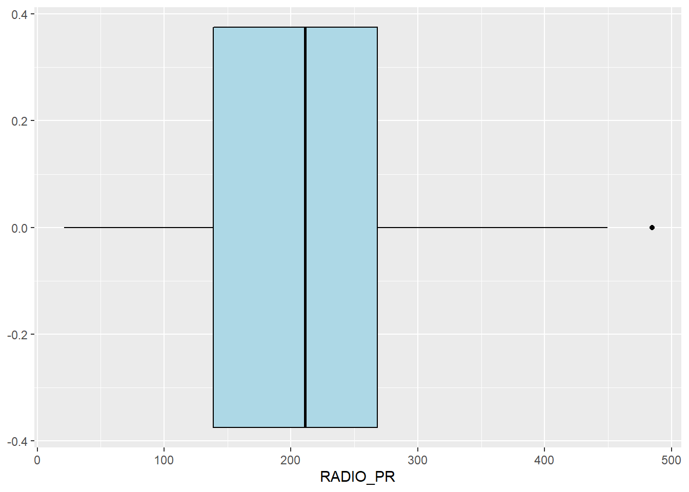
Observation:
Both the above plot shows that the data follows normal distribution and there is only one outlier.
Similarly, now let’s plot for all other communication medium. First let us plot all the histograms individually and then merge them using tmap_arrange() function.
radio <- ggplot(data=ict_derived,
aes(x= `RADIO_PR`,
y= ..density..)) +
geom_histogram(bins=20,
color="black",
fill="coral")+
geom_density(color="black",
alpha = 0.2)
tv <- ggplot(data=ict_derived,
aes(x= `TV_PR`,
y= ..density..)) +
geom_histogram(bins=20,
color="black",
fill="coral")+
geom_density(color="black",
alpha = 0.2)
llphone <- ggplot(data=ict_derived,
aes(x= `LLPHONE_PR`,
y= ..density..)) +
geom_histogram(bins=20,
color="black",
fill="coral")+
geom_density(color="black",
alpha = 0.2)
mphone <- ggplot(data=ict_derived,
aes(x= `MPHONE_PR`,
y= ..density..)) +
geom_histogram(bins=20,
color="black",
fill="coral")+
geom_density(color="black",
alpha = 0.2)
computer <- ggplot(data=ict_derived,
aes(x= `COMPUTER_PR`,
y= ..density..)) +
geom_histogram(bins=20,
color="black",
fill="coral")+
geom_density(color="black",
alpha = 0.2)
internet <- ggplot(data=ict_derived,
aes(x= `INTERNET_PR`,
y= ..density..)) +
geom_histogram(bins=20,
color="black",
fill="coral")+
geom_density(color="black",
alpha = 0.)
ggarrange(radio, tv, llphone, mphone, computer, internet,
ncol = 3,
nrow = 2)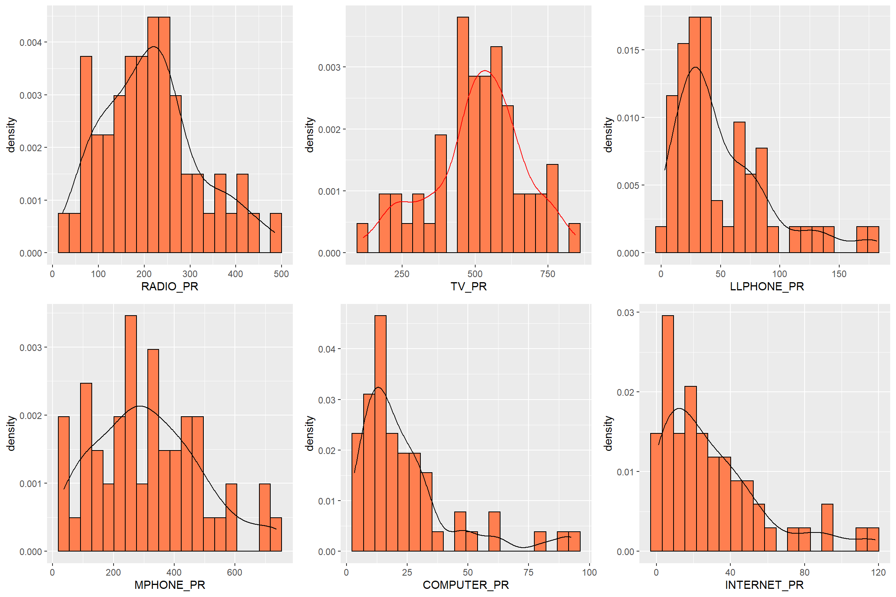
Before we visualise the maps using choropleth, let us first combine both geospatial and aspatial datsets into one simple feature dataframe using the code chunk below.
shan_sf <- left_join(shan_sf,
ict_derived,
by=c("TS_PCODE"="TS_PCODE"))What is the distribution of Radio penetration rate of Shan State?
qtm(shan_sf, "RADIO_PR")
In order to reveal the distribution shown in the choropleth map above are bias to the underlying total number of households at the townships, we will create two choropleth maps, one for the total number of households (i.e. TT_HOUSEHOLDS.map) and one for the total number of household with Radio (RADIO.map) by using the code chunk below.
TT_HOUSEHOLDS.map <- tm_shape(shan_sf) +
tm_fill(col = "TT_HOUSEHOLDS",
n = 5,
palette = "BuPu",
style = "jenks",
title = "Total households") +
tm_legend(legend.position = c("right", "bottom"))+
tm_layout(main.title = "Households",
main.title.position = "center",
main.title.size = 1,
legend.height = 1,
legend.width = 1,
legend.text.size = 1,
legend.title.size = 1,
main.title.fontface = "bold")+
tm_compass(type="8star",
position=c("right", "top"))+
tm_borders(alpha = 0.5)
RADIO.map <- tm_shape(shan_sf) +
tm_fill(col = "RADIO",
n = 5,
palette = "BuPu",
style = "jenks",
title = "Number Radio ") +
tm_legend(legend.position = c("right", "bottom"))+
tm_layout(main.title = "Households with radio",
main.title.position = "center",
main.title.size = 1,
legend.height = 1,
legend.width = 1,
legend.text.size = 1,
legend.title.size = 1,
main.title.fontface = "bold")+
tm_compass(type="8star",
position=c("right", "top"))+
tm_borders(alpha = 0.5)
tmap_arrange(TT_HOUSEHOLDS.map, RADIO.map,
asp=NA, ncol=2)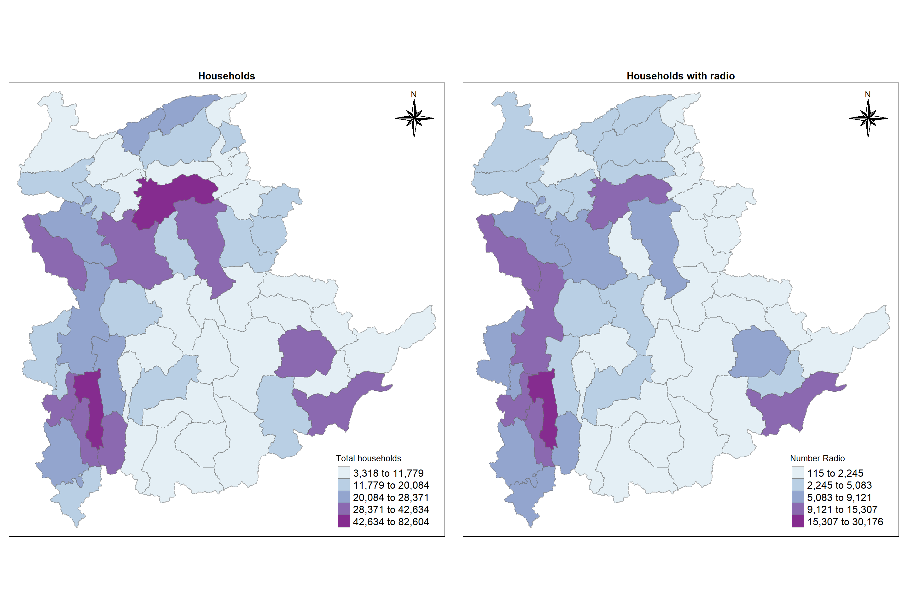
The maps above clearly show that townships with relatively larger number of households are also showing relatively higher number of radio ownership.
Now let us plot the choropleth maps showing the dsitribution of total number of households and Radio penetration rate by using the code chunk below.
tm_shape(shan_sf) +
tm_polygons(c("TT_HOUSEHOLDS", "RADIO_PR"),
style="jenks") +
tm_fill(palette = "BuPu")+
tm_facets(sync = TRUE, ncol = 2) +
tm_legend(legend.position = c("right", "bottom"))+
tm_layout(outer.margins=0, asp=0,
main.title = "Total households and Households using Radio proportion",
main.title.position = "center",
main.title.size = 1,
legend.height = 1,
legend.width = 1,
legend.text.size = 1,
legend.title.size = 1,
main.title.fontface = "bold")+
tm_compass(type="8star",
position=c("right", "top"))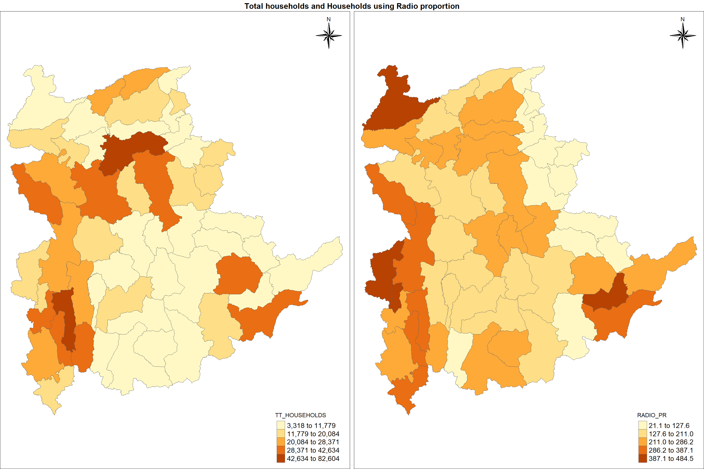
Observation:
Unlike the previous map, here we can observe the regions where majority of households using radio out of total no. of households. For eg, we can see the central region has got quite a lot no. of households, but the no. of households using radio by proportion are more in northern region. This is the advantage of using proportion values instead of actual numbers.
Before we perform cluster analysis, it is important for us to ensure that the cluster variables are not highly correlated.
In this section, you will learn how to use corrplot.mixed() function of corrplot package to visualise and analyse the correlation of the input variables.
cluster_vars.cor = cor(ict_derived[,12:17])
corrplot.mixed(cluster_vars.cor,
lower = "ellipse",
upper = "number",
tl.pos = "lt",
diag = "l",
tl.col = "black")
The correlation plot above shows that COMPUTER_PR and INTERNET_PR are highly correlated. This suggest that only one of them should be used in the cluster analysis instead of both.
Now let us perform hierarchical cluster analysis. The analysis consists of four major steps:
Extracting clustering variables
Data standardisation
Visualising the clustering variables
Computing Proximity Matrix
Extracting clustering variables
cluster_vars <- shan_sf %>%
st_set_geometry(NULL) %>%
select("TS.x", "RADIO_PR", "TV_PR", "LLPHONE_PR", "MPHONE_PR", "COMPUTER_PR")
head(cluster_vars,10) TS.x RADIO_PR TV_PR LLPHONE_PR MPHONE_PR COMPUTER_PR
1 Mongmit 286.1852 554.1313 35.30618 260.6944 12.15939
2 Pindaya 417.4647 505.1300 19.83584 162.3917 12.88190
3 Ywangan 484.5215 260.5734 11.93591 120.2856 4.41465
4 Pinlaung 231.6499 541.7189 28.54454 249.4903 13.76255
5 Mabein 449.4903 708.6423 72.75255 392.6089 16.45042
6 Kalaw 280.7624 611.6204 42.06478 408.7951 29.63160
7 Pekon 318.6118 535.8494 39.83270 214.8476 18.97032
8 Lawksawk 387.1017 630.0035 31.51366 320.5686 21.76677
9 Nawnghkio 349.3359 547.9456 38.44960 323.0201 15.76465
10 Kyaukme 210.9548 601.1773 39.58267 372.4930 30.94709Now let us rename the township name instead of row number and delete the old one using the code chunk below
row.names(cluster_vars) <- cluster_vars$"TS.x"
shan_ict <- select(cluster_vars, c(2:6))
head(shan_ict, 10) RADIO_PR TV_PR LLPHONE_PR MPHONE_PR COMPUTER_PR
Mongmit 286.1852 554.1313 35.30618 260.6944 12.15939
Pindaya 417.4647 505.1300 19.83584 162.3917 12.88190
Ywangan 484.5215 260.5734 11.93591 120.2856 4.41465
Pinlaung 231.6499 541.7189 28.54454 249.4903 13.76255
Mabein 449.4903 708.6423 72.75255 392.6089 16.45042
Kalaw 280.7624 611.6204 42.06478 408.7951 29.63160
Pekon 318.6118 535.8494 39.83270 214.8476 18.97032
Lawksawk 387.1017 630.0035 31.51366 320.5686 21.76677
Nawnghkio 349.3359 547.9456 38.44960 323.0201 15.76465
Kyaukme 210.9548 601.1773 39.58267 372.4930 30.94709Data Standardisation
In order to avoid the cluster analysis result is baised to clustering variables with large values, it is useful to standardise the input variables before performing cluster analysis.
Performing Min-Max standardisation
In the code chunk below, normalize() of heatmaply package is used to stadardisation the clustering variables by using Min-Max method. The summary() is then used to display the summary statistics of the standardised clustering variables.
shan_ict.std <- normalize(shan_ict)
summary(shan_ict.std) RADIO_PR TV_PR LLPHONE_PR MPHONE_PR
Min. :0.0000 Min. :0.0000 Min. :0.0000 Min. :0.0000
1st Qu.:0.2544 1st Qu.:0.4600 1st Qu.:0.1123 1st Qu.:0.2199
Median :0.4097 Median :0.5523 Median :0.1948 Median :0.3846
Mean :0.4199 Mean :0.5416 Mean :0.2703 Mean :0.3972
3rd Qu.:0.5330 3rd Qu.:0.6750 3rd Qu.:0.3746 3rd Qu.:0.5608
Max. :1.0000 Max. :1.0000 Max. :1.0000 Max. :1.0000
COMPUTER_PR
Min. :0.00000
1st Qu.:0.09598
Median :0.17607
Mean :0.23692
3rd Qu.:0.29868
Max. :1.00000 Performing Z-score standardisation
Z-score standardisation can be performed easily by using scale() of Base R. The code chunk below will be used to stadardisation the clustering variables by using Z-score method.
shan_ict.z <- scale(shan_ict)
describe(shan_ict.z) vars n mean sd median trimmed mad min max range skew kurtosis
RADIO_PR 1 55 0 1 -0.04 -0.06 0.94 -1.85 2.55 4.40 0.48 -0.27
TV_PR 2 55 0 1 0.05 0.04 0.78 -2.47 2.09 4.56 -0.38 -0.23
LLPHONE_PR 3 55 0 1 -0.33 -0.15 0.68 -1.19 3.20 4.39 1.37 1.49
MPHONE_PR 4 55 0 1 -0.05 -0.06 1.01 -1.58 2.40 3.98 0.48 -0.34
COMPUTER_PR 5 55 0 1 -0.26 -0.18 0.64 -1.03 3.31 4.34 1.80 2.96
se
RADIO_PR 0.13
TV_PR 0.13
LLPHONE_PR 0.13
MPHONE_PR 0.13
COMPUTER_PR 0.13We observe that mean and standard deviation of the Z-score standardised clustering variables are 0 and 1 respectively. We should take note that Z-score standardisation method should only be used if we would assume all variables come from some normal distribution.
Visualising the standardised clustering variables
Let us visualise the standardised clustering variables graphically in addition to summary statistics
r <- ggplot(data=ict_derived,
aes(x= `RADIO_PR`)) +
geom_histogram(bins=20,
color="black",
fill="light blue")+
ggtitle("Before Standardisation")
shan_ict_s_df <- as.data.frame(shan_ict.std)
s <- ggplot(data=shan_ict_s_df,
aes(x=`RADIO_PR`)) +
geom_histogram(bins=20,
color="black",
fill="light blue") +
ggtitle("Min-Max Standardisation")
shan_ict_z_df <- as.data.frame(shan_ict.z)
z <- ggplot(data=shan_ict_z_df,
aes(x=`RADIO_PR`)) +
geom_histogram(bins=20,
color="black",
fill="light blue") +
ggtitle("Z-score Standardisation")
ggarrange(r, s, z,
ncol = 3,
nrow = 1)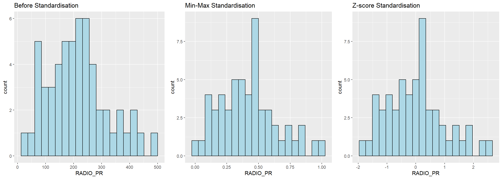
We can observe that after standardisation, the variables follow normal distribution.
Computing Proximity Matrix The code chunk below is used to compute the proximity matrix using euclidean method although the function dist() supports six distance proximity calculations, they are: euclidean, maximum, manhattan, canberra, binary and minkowski.
proxmat <- dist(shan_ict, method = 'euclidean')Computing hierarchical clustering
The code chunk below performs hierarchical cluster analysis using ward.D method. The hierarchical clustering output is stored in an object of class hclust which describes the tree produced by the clustering process.
hclust_ward <- hclust(proxmat, method = 'ward.D')
plot(hclust_ward, cex = 0.6)
Selecting the optimal clustering algorithm
We can identify stronger clustering structures by using use agnes() function of cluster package. It functions like hclus(), however, with the agnes() function you can also get the agglomerative coefficient, which measures the amount of clustering structure found (values closer to 1 suggest strong clustering structure).
The code chunk below will be used to compute the agglomerative coefficients of all hierarchical clustering algorithms.
m <- c( "average", "single", "complete", "ward")
names(m) <- c( "average", "single", "complete", "ward")
ac <- function(x) {
agnes(shan_ict, method = x)$ac
}
map_dbl(m, ac) average single complete ward
0.8131144 0.6628705 0.8950702 0.9427730 We can see that Ward’s method provides the strongest clustering structure among the four methods assessed. Hence, in the subsequent analysis, only Ward’s method will be used.
Determining Optimal Clusters
There are three commonly used methods to determine the optimal no. of clusters, they are:
The gap statistic compares the total within intra-cluster variation for different values of k with their expected values under null reference distribution of the data. The estimate of the optimal clusters will be value that maximize the gap statistic (i.e., that yields the largest gap statistic). This means that the clustering structure is far away from the random uniform distribution of points.
To compute the gap statistic, clusGap() of cluster package will be used.
set.seed(3456)
gap_stat <- clusGap(shan_ict,
FUN = hcut,
nstart = 25,
K.max = 10,
B = 50)
# Print the result
print(gap_stat, method = "firstmax")Clustering Gap statistic ["clusGap"] from call:
clusGap(x = shan_ict, FUNcluster = hcut, K.max = 10, B = 50, nstart = 25)
B=50 simulated reference sets, k = 1..10; spaceH0="scaledPCA"
--> Number of clusters (method 'firstmax'): 1
logW E.logW gap SE.sim
[1,] 8.407129 8.672403 0.2652741 0.03653530
[2,] 8.130029 8.342622 0.2125931 0.04070127
[3,] 7.992265 8.193395 0.2011300 0.03385200
[4,] 7.862224 8.074259 0.2120349 0.03763550
[5,] 7.756461 7.972480 0.2160197 0.04335443
[6,] 7.665594 7.886146 0.2205526 0.04599469
[7,] 7.590919 7.805538 0.2146194 0.04620556
[8,] 7.526680 7.731965 0.2052856 0.04826211
[9,] 7.458024 7.664652 0.2066277 0.04894966
[10,] 7.377412 7.600452 0.2230399 0.04956733Next, we can visualise the plot by using fviz_gap_stat() of factoextra package.
fviz_gap_stat(gap_stat)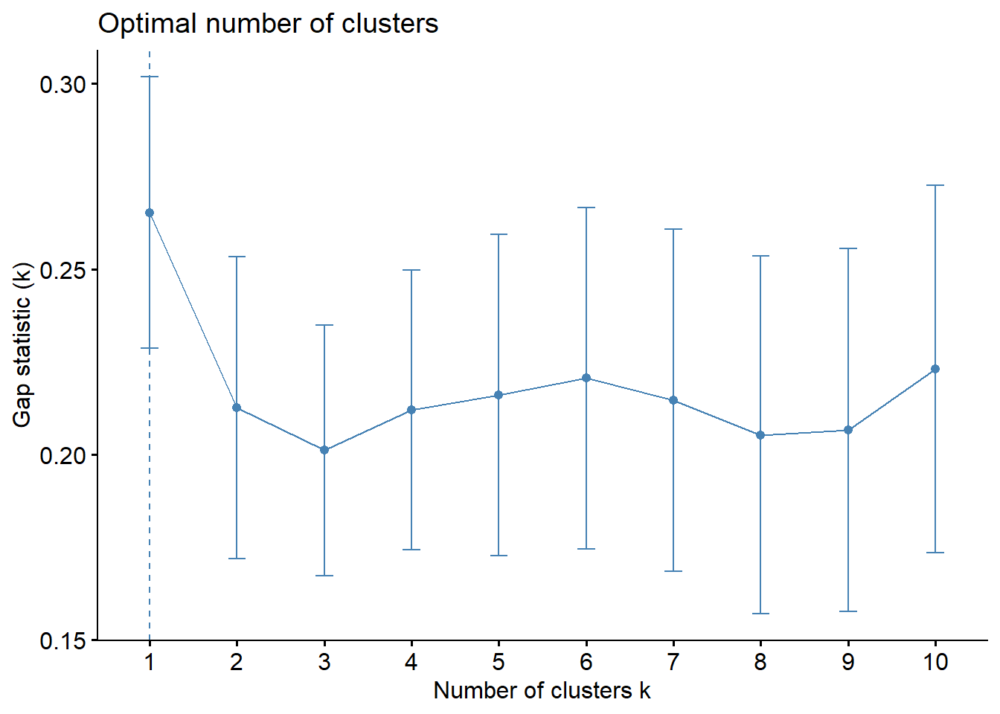
So, we can conclude that the recommended number of cluster to retain is 1. However, it is not logical to retain only one cluster. By examine the gap statistic graph, the 6-cluster gives the largest gap statistic and should be the next best cluster to pick.
Interpreting the dendrograms
Let us draw the dendrogram with a border around the selected clusters by using rect.hclust() of R stats. The argument border is used to specify the border colors for the rectangles.
plot(hclust_ward, cex = 0.6)
rect.hclust(hclust_ward,
k = 6,
border = 2:5)
Hierarchical clustering analysis using heatmaply
In this section, we will learn how to perform visually-driven hiearchical clustering analysis by using heatmaply package. With heatmaply, we are able to build both highly interactive cluster heatmap or static cluster heatmap.
First transform shan_ict data frame into a data matrix
heatmaply() of heatmaply package is used to build an interactive cluster heatmap
shan_ict_mat <- data.matrix(shan_ict)
heatmaply(normalize(shan_ict_mat),
Colv=NA,
dist_method = "euclidean",
hclust_method = "ward.D",
seriate = "OLO",
colors = Blues,
k_row = 6,
margins = c(NA,200,60,NA),
fontsize_row = 4,
fontsize_col = 5,
main="Geographic Segmentation of Shan State by ICT indicators",
xlab = "ICT Indicators",
ylab = "Townships of Shan State"
)Mapping the clusters formed
Based on the above dendragram, let us decide to retain six clusters. cutree() of R Base will be used in the code chunk below to derive a 6-cluster model.
groups <- as.factor(cutree(hclust_ward, k=6))The code chunk below appends the groups object onto shan_sf simple feature object in three steps:
the groups list object will be converted into a matrix
cbind() is used to append groups matrix onto shan_sf to produce an output simple feature object called shan_sf_cluster
rename of dplyr package is used to rename as.matrix.groups field as CLUSTER
shan_sf_cluster <- cbind(shan_sf, as.matrix(groups)) %>%
rename(`CLUSTER`=`as.matrix.groups.`)Next, qtm() of tmap package is used to plot the choropleth map showing the cluster formed
qtm(shan_sf_cluster, "CLUSTER")
The choropleth map above reveals the clusters are very fragmented. The is one of the major limitation when non-spatial clustering algorithm such as hierarchical cluster analysis method is used.
Let us see how to derive spatially constrained cluster by using skater() method of spdep package.
Converting into SpatialPolygonsDataFrame
Let us convert shan_sf into SpatialPolygonsDataFrame. as SKATER function only support sp objects such as SpatialPolygonDataFrame.
The code chunk below uses as_Spatial() of sf package to convert shan_sf into a SpatialPolygonDataFrame called shan_sp.
shan_sp <- as_Spatial(shan_sf)Computing Neighbour List
poly2nd() of spdep package will be used to compute the neighbours list from polygon list
shan.nb <- poly2nb(shan_sp)
summary(shan.nb)Neighbour list object:
Number of regions: 55
Number of nonzero links: 264
Percentage nonzero weights: 8.727273
Average number of links: 4.8
Link number distribution:
2 3 4 5 6 7 8 9
5 9 7 21 4 3 5 1
5 least connected regions:
3 5 7 9 47 with 2 links
1 most connected region:
8 with 9 linksplot(shan_sp,
border=grey(.5))
plot(shan.nb,
coordinates(shan_sp),
col="red",
add=TRUE)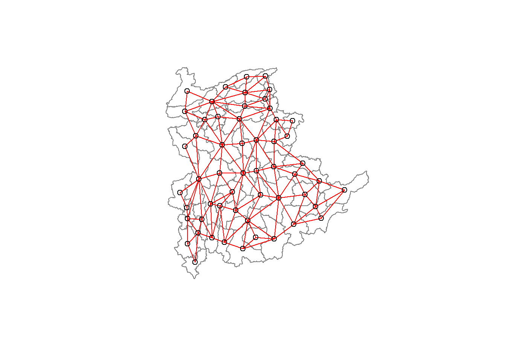
Computing minimum spanning tree
nbcosts() of spdep package is used to compute the cost of each edge. It is the distance between it nodes. This function compute this distance using a data.frame with observations vector in each node.
The code chunk below is used to compute the cost of each edge.
lcosts <- nbcosts(shan.nb, shan_ict)Next, let us incorporate these costs into a weights object in the same way as we did in the calculation of inverse of distance weights. In other words, we convert the neighbour list to a list weights object by specifying the just computed lcosts as the weights.
shan.w <- nb2listw(shan.nb,
lcosts,
style="B")
summary(shan.w)Characteristics of weights list object:
Neighbour list object:
Number of regions: 55
Number of nonzero links: 264
Percentage nonzero weights: 8.727273
Average number of links: 4.8
Link number distribution:
2 3 4 5 6 7 8 9
5 9 7 21 4 3 5 1
5 least connected regions:
3 5 7 9 47 with 2 links
1 most connected region:
8 with 9 links
Weights style: B
Weights constants summary:
n nn S0 S1 S2
B 55 3025 76267.65 58260785 522016004Computing minimum spanning tree
The minimum spanning tree is computed by mean of the mstree() of spdep package as shown in the code chunk below
shan.mst <- mstree(shan.w)
class(shan.mst)[1] "mst" "matrix"The plot method for the MST include a way to show the observation numbers of the nodes in addition to the edge. As before, we plot this together with the township boundaries. We can see how the initial neighbour list is simplified to just one edge connecting each of the nodes, while passing through all the nodes.
plot(shan_sp, border=gray(.5))
plot.mst(shan.mst,
coordinates(shan_sp),
col="blue",
cex.lab=0.7,
cex.circles=0.005,
add=TRUE)
Computing spatially constrained clusters using SKATER method
The code chunk below compute the spatially constrained cluster using skater() of spdep package
clust6 <- skater(edges = shan.mst[,1:2],
data = shan_ict,
method = "euclidean",
ncuts = 5)Lastly, let us plot the pruned tree that shows the five clusters on top of the townshop area.
plot(shan_sp, border=gray(.5))
plot(clust6,
coordinates(shan_sp),
cex.lab=.7,
groups.colors=c("red","green","blue", "brown", "pink"),
cex.circles=0.005,
add=TRUE)Warning in segments(coords[id1, 1], coords[id1, 2], coords[id2, 1],
coords[id2, : "add" is not a graphical parameter
Warning in segments(coords[id1, 1], coords[id1, 2], coords[id2, 1],
coords[id2, : "add" is not a graphical parameter
Warning in segments(coords[id1, 1], coords[id1, 2], coords[id2, 1],
coords[id2, : "add" is not a graphical parameter
Warning in segments(coords[id1, 1], coords[id1, 2], coords[id2, 1],
coords[id2, : "add" is not a graphical parameter
Visualising the clusters in choropleth map
The code chunk below is used to plot the newly derived clusters by using SKATER method
groups_mat <- as.matrix(clust6$groups)
shan_sf_spatialcluster <- cbind(shan_sf_cluster, as.factor(groups_mat)) %>%
rename(`SP_CLUSTER`=`as.factor.groups_mat.`)
qtm(shan_sf_spatialcluster, "SP_CLUSTER")
For effective interpretation, let us plot both the hierarchical clustering and spatially constrained hierarchical clustering maps next to each other.
hclust.map <- qtm(shan_sf_cluster,
"CLUSTER") +
tm_borders(alpha = 0.5)
shclust.map <- qtm(shan_sf_spatialcluster,
"SP_CLUSTER") +
tm_borders(alpha = 0.5)
tmap_arrange(hclust.map, shclust.map,
asp=NA, ncol=2)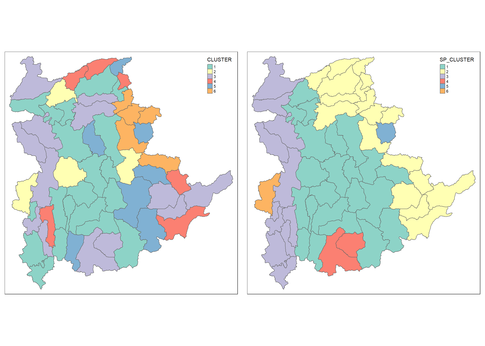
The map on the right shows the clusters of the region vividly which helps us to delineate homogeneous region easily.
In this study, we have achieved delineating homogeneous region of Shan State, Myanmar by using multiple Information and Communication technology (ICT) measures, namely: Radio, Television, Land line phone, Mobile phone, Computer, and Internet at home. In the upcoming section, In the upcoming section let us see how to calibrate Hedonic Pricing Model for Private Highrise Property with GWR Method. Stay tuned………………